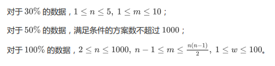
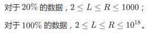
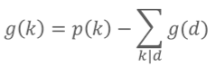
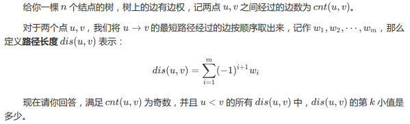
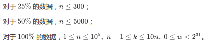

原文连接:https://www.cnblogs.com/I-Love-You-520/p/11616040.html
T1 统计数字
题目
【题目描述】
设 S(N ) 表示 N 的各位数字之和，如 S(484) = 4+8+4 = 16， S(22) = 2+2 = 4。
如果一个正整数满足 S(x*x) = S(x) *S(x)，我们称之为 Rabbit N umber。比方说，22 就是一个 Rabbit N umber，因为 S(484) = S(22) *S(22)。
现在，给出一个区间 [L, R]，求在该区间内的 Rabbit N umber 的个数。
【输入格式】
输入仅一行，为空格隔开的两个数 L 和 R。
【输出格式】
输出仅一行一个整数，表示所求 Rabbit N umber 的个数。
【输入样例】
58 484【输出样例】
24 【数据规模】
1 <= L <= R <= 10^9
解析
看完题目第一反应：从L枚举到R，依次判断每个数是不是Rabbit N umber。然而数据规模是109，显然超时。
不过没事，打完暴力后，随便试一些数字，看看有没有什么规律。
1~1000内的Rabbit N umber如下：
1 2 3 10 11 12 13 20 21 22 30 31 100 101 102 103 110 111 112 113 120 121 122 130 200 201 202 210 211 212 220 221 300 301 310 311 1000
不难发现，无论是哪一位上，都没有大于3的数字（更大的范围内也是，可以自己试试），至于为什么，这里便不给出详细证明了（因为本蒟蒻不会）。
所以便有了剪纸：任何位上有大于3的数字就跳过。
于是便有了两种做法：
- dfs+剪纸
- 打表+二分
打表这里就不说了（太麻烦），这里来讲dfs做法：
dfs(int temp):temp可以理解为当前数是由temp+一个新的个位数组成的数，具体看代码就懂了。
从temp=0开始搜，每次dfs函数里处理个位为0 1 2 3的数，满足条件且在L~R的范围内就累加个数，
处理完后，如果数字小于等于R/10的话，就dfs(x)（即还可以增加位数）。
最后输出总个数就好了，别忘了开long long，至于S(x)，直接模拟就好了。
Code


#include <algorithm> #include <iostream> #include <cstring> #include <string> #include <cstdio> #include <cmath> using namespace std; long long read() { long long num=0,w=1; char ch=getchar(); while(ch<'0'||ch>'9') { if(ch=='-') w=-1; ch=getchar(); } while(ch>='0'&&ch<='9') { num=(num<<1)+(num<<3)+ch-'0'; ch=getchar(); } return num*w; } long long l,r,ans; int S(long long x) { int n=0; while(x>0) { n+=x%10; x/=10; } return n; } void dfs(int temp) { for(int i=0;i<=3;i++) { long long x=temp*10+i; int s=S(x); if(x==0||S(x*x)!=s*s) continue; if(l<=x&&r>=x) ans++; if(x<=r/10) dfs(x); } } int main() { //freopen("rabbit.in","r",stdin); //freopen("rabbit.out","w",stdout); l=read(),r=read(); dfs(0); cout<<ans; return 0; }
T2 数边方案
题目
【题目描述】
给你一张有n个点m条边的无向连通图，每条边有边权，设disai表示这张图中点i到点1的最短距离。
现在要求你在这张图中删去m-(n-1)条边，使得这张图变成一棵树，设disbi表示这棵树中点i到点1的最短距离。 现在请你求出，有多少种删边方案，使得对于任意的i，都有disai=disbi。
【输入格式】
第一行包含两个正整数n,m，表示无向连通图的点数和边数。
接下来有m行，每行有3个正整数u,v,w，表示点u和点v之间有一条边权为w的无向边。
数据保证无重边、无自环。
【输出格式】
输出一行一个整数，表示满足条件的方案数对2147483647取模的结果。
【输入样例】
3 3
1 2 2
1 3 1
2 3 1【输出样例】
2 【数据规模】

解析
据说有个叫最短路图的东西，就是把原图中满足dis(u)+w=dis(v)的边(u,v,w)保留下来构成的子图。
本题中，边权一定为正整数，所以最短路图是一个有向无环图，答案只需枚举有向无环图中生成树的数量即可，然而仍然过不了。
事实上，在构造最短路图的过程中，就是在给每个点选一个父亲，而可选父亲总数就是这个点的入度，显然答案为入度之积。
具体实现是用最短路，本蒟蒻采用的是Dijkstra。
Code
#include <algorithm> #include <iostream> #include <cstring> #include <string> #include <cstdio> #include <cmath> #include <queue> using namespace std; priority_queue<pair<int,int> > q; const int N=1010,M=1000100; const long long mod=2147483647; int n,m,head[N],ver[M],edge[M],from[M],tot,next[M],d[N],deg[N]; long long ans=1; bool v[N]; void add(int x,int y,int z) { ver[++tot]=y,edge[tot]=z,from[tot]=x,next[tot]=head[x],head[x]=tot; } void dijkstra() { memset(d,0x7f7f7f7f,sizeof(d)); memset(v,false,sizeof(v)); d[1]=0; q.push(make_pair(0,1)); while(q.size()) { int x=q.top().second; q.pop(); if(v[x]) continue; v[x]=1; for(int i=head[x];i;i=next[i]) { int y=ver[i],z=edge[i]; if(d[y]>d[x]+z) { d[y]=d[x]+z; q.push(make_pair(-d[y],y)); } } } for(int i=1;i<=tot;i++) { int x=from[i],y=ver[i],z=edge[i]; if(d[x]+z==d[y]) deg[y]++; } for(int i=1;i<=n;i++) if(deg[i]) ans=(1LL*ans*deg[i])%mod; } int main() { cin>>n>>m; for(int i=1;i<=m;i++) { int x,y,z; cin>>x>>y>>z; add(x,y,z); add(y,x,z); } dijkstra(); cout<<ans; return 0; }
T3 开根号
题目
【题目描述】
【输入格式】
输入包含多组数据。每组数据包含一行两个正整数L,R。
文件以0 0结尾（结尾不需要输出）。
【输出格式】
对于每组数据，输出一行表示答案。保证答案在[0,263)范围内。
【样例输入】
2 10
248832 248832
0 0【样例输出】
13
5【数据规模】

解析
可怕的数论题~~~
先把区间求和用前缀和表示，所以只需求[1,n]的答案。
依次求每个数的f(i)很麻烦，考虑求[1,n]中f(i)=k的个数，其个数用g(k)表示。
用p(k)表示[1,n]中开k次方还是正整数的数的个数，可以得到p(k)=n1/k(向下取整)。
则。
所以用递推推出答案就可以了。
Code
#include <algorithm> #include <iostream> #include <cstring> #include <string> #include <cstdio> #include <cmath> using namespace std; const double eps=1e-10; long long l,r,f[100]; long long solve(long long x) { if(x<2) return 1; int num=0; for(int i=63;i>=2;i--) { f[i]=(long long)(pow(x,(double)1.0/i)+eps)-1; for(int j=i+i;j<=63;j+=i) f[i]-=f[j]; num+=f[i]*(i-1); } return num+x; } int main() { cin>>l>>r; while(l!=0&&r!=0) { cout<<solve(r)-solve(l-1)<<endl; cin>>l>>r; } return 0; }
T4 旅行
题目
【题目描述】

【输入格式】
第一行包含两个非负整数n,k，含义如【题目描述】所述。
接下来n-1行，每行三个正整数u,v,w，表示u,v之间有一条边权为w的边。
【输出格式】
输出一行一个整数，表示答案。保证存在合法解。
【输入样例】
5 6
1 2 3
1 3 4
2 4 2
2 5 3【输出样例】
4 【数据规模】

解析
不难发现：
- dis(u,v)=dis(u,1)+dis(v,1)。
- 如果经过的边数为奇数，那么必定有一个点的深度为奇数，另一个点的深度为偶数。
所以将所有点按深度的奇偶来分类，于是就有了两个序列a，b，只需求ai+bi的第k小值即可。
Code
#include <algorithm> #include <iostream> #include <cstring> #include <string> #include <cstdio> #include <cmath> #include <queue> using namespace std; const int N=100010; struct node { long long v; int p; node(long long a,int b):v(a),p(b){} bool operator < (const node &a) const { return v>a.v; } }; priority_queue<node> q; int head[N],ver[N<<1],edge[N<<1],next[N<<1],tot; long long dis[N],deep[N],a[N],b[N],cnta,cntb; void add(int x,int y,int z) { ver[++tot]=y,edge[tot]=z,next[tot]=head[x],head[x]=tot; } void dfs(int x,int fa) { for(int i=head[x];i;i=next[i]) { int y=ver[i],z=edge[i]; if(y==fa) continue; dis[y]=-dis[x]+z,deep[y]=deep[x]+1; dfs(y,x); } } int main() { int n,k; cin>>n>>k; for(int i=1;i<=n-1;i++) { int x,y,z; cin>>x>>y>>z; add(x,y,z); add(y,x,z); } dfs(1,0); for(int i=1;i<=n;i++) if(deep[i]&1) a[++cnta]=dis[i]; else b[++cntb]=dis[i]; sort(b+1,b+cntb+1); for(int i=1;i<=cnta;i++) q.push(node(a[i]+b[1],i)); for(int i=1;i<=cnta;i++) head[i]=1; while(k>1) { node t=q.top(); q.pop(); if((++head[t.p])<=cntb) q.push(node(a[t.p]+b[head[t.p]],t.p)); k--; } cout<<q.top().v; return 0; }